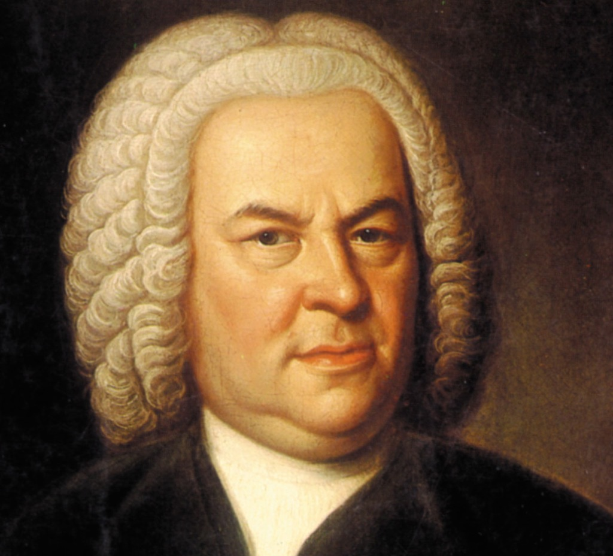
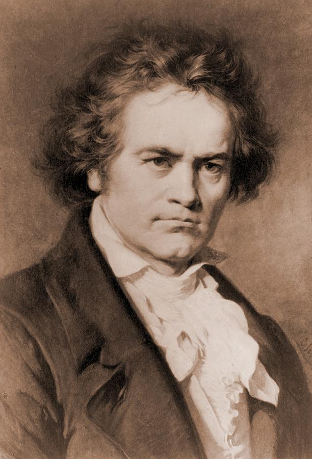
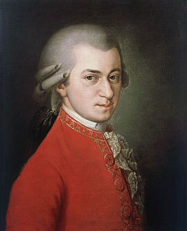

|  | Иоганн Себастьян Бах(21 [31] марта 1685 — 28 июля 1750) — немецкий композитор, представитель эпохи барокко, органист-виртуоз, музыкальный педагог. За свою жизнь Бах написал более 1000 произведений. В его творчестве представлены все значимые жанры того времени, кроме оперы; он обобщил достижения музыкального искусства периода барокко[1]. Бах — знаменитый мастер полифонии, продолжатель старинных традиций, в творчестве Баха полифония достигает расцвета. |
|  | Людвиг ван Бетховен (16 декабря 1770 — 26 марта 1827) — немецкий композитор и пианист, последний представитель «венской классической школы». Бетховен — ключевая фигура классической музыки в период между классицизмом и романтизмом, один из наиболее исполняемых композиторов в мире. Он писал во всех существовавших в его время жанрах, включая оперу, музыку к драматическим спектаклям, хоровые сочинения. |
|  | Вольфганг Амадей Моцарт (27 января 1756 — 5 декабря 1791) — австрийский композитор и музыкант-виртуоз. Один из самых популярных классических композиторов, Моцарт оказал большое влияние на мировую музыкальную культуру. По свидетельству современников, Моцарт обладал феноменальным музыкальным слухом, памятью и способностью к импровизации. В отличие от многих композиторов XVIII века, Моцарт не просто работал во всех музыкальных формах своего времени, но и добился в них большого успеха. |